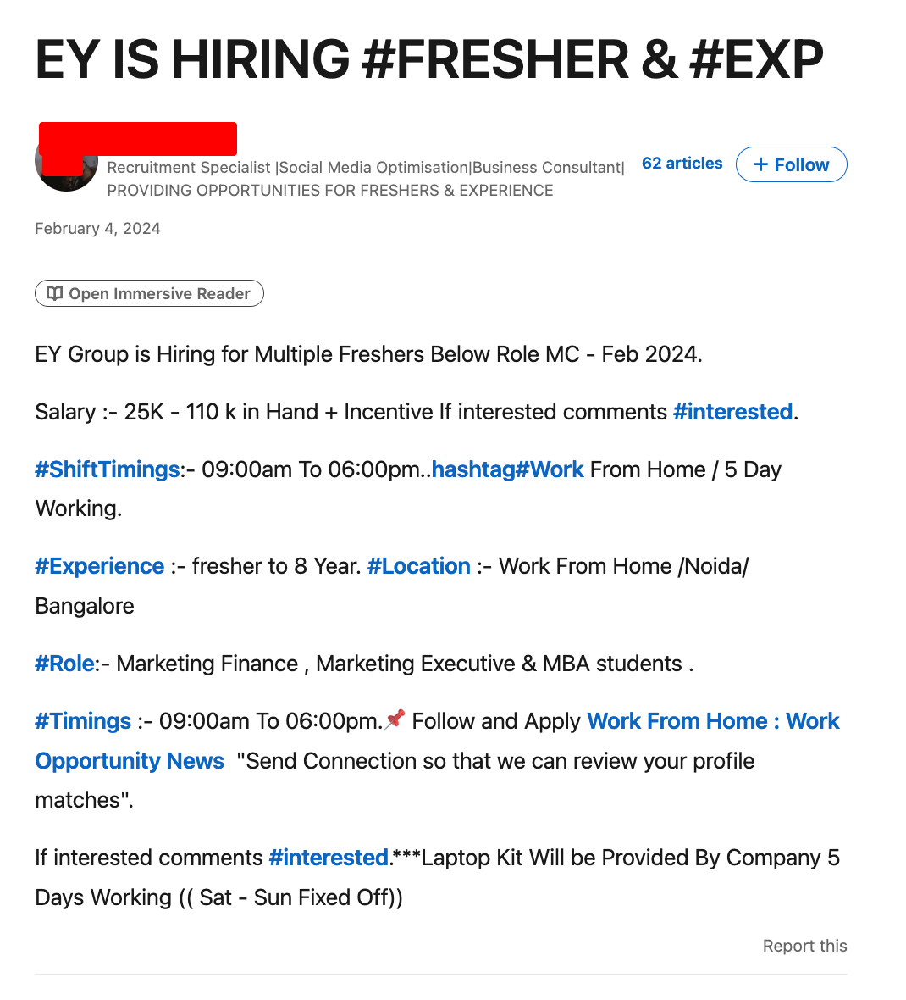
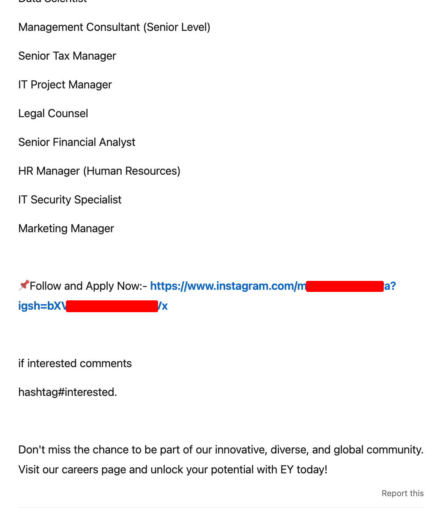
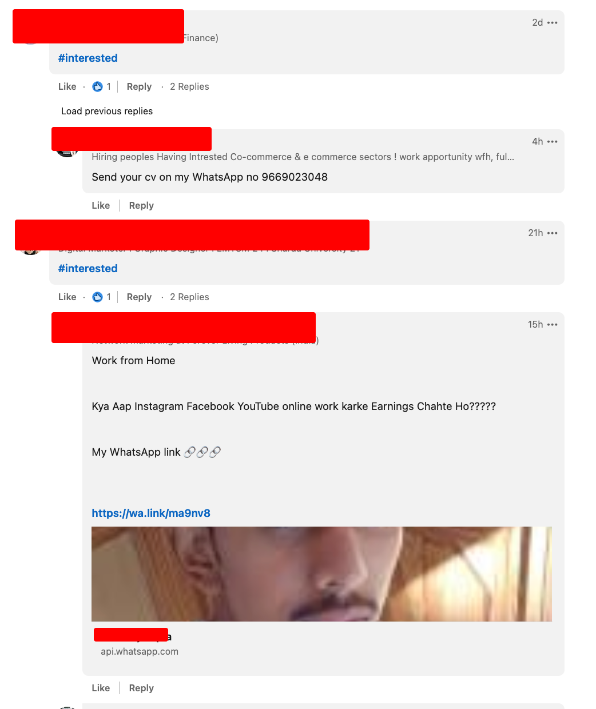
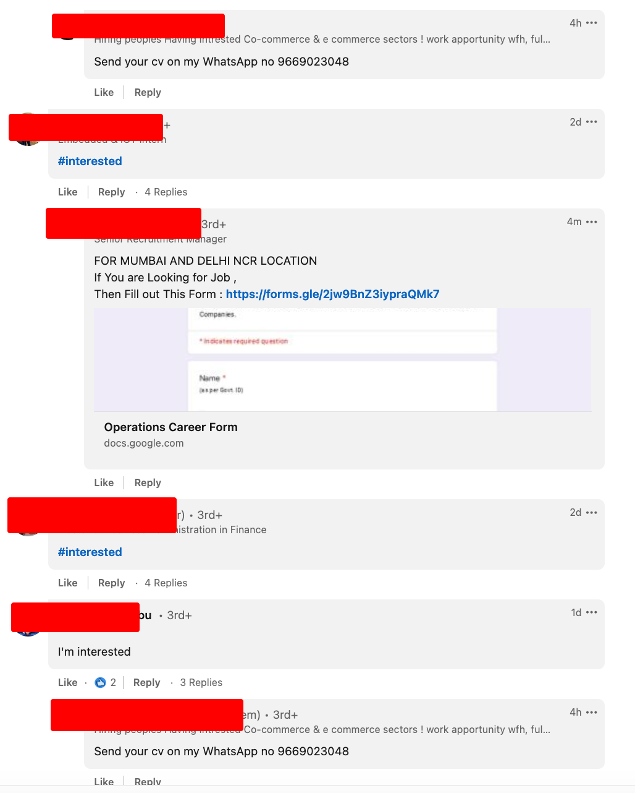
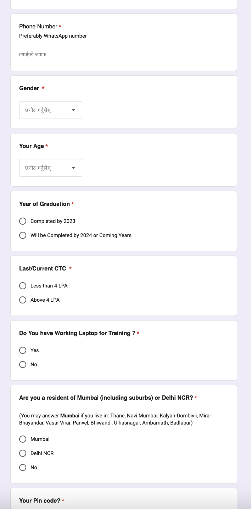
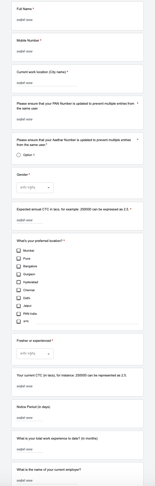
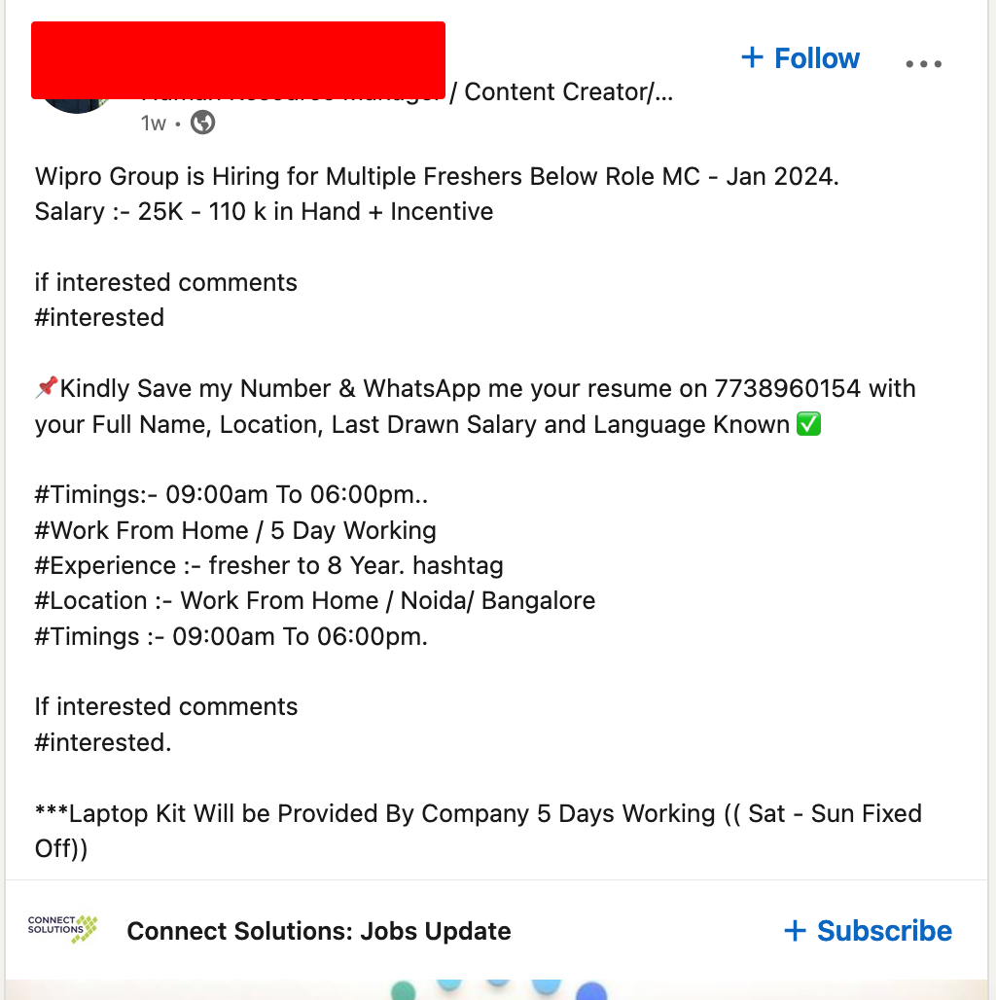
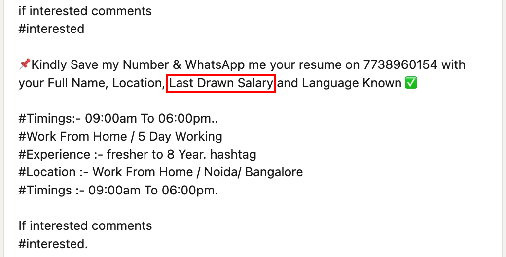
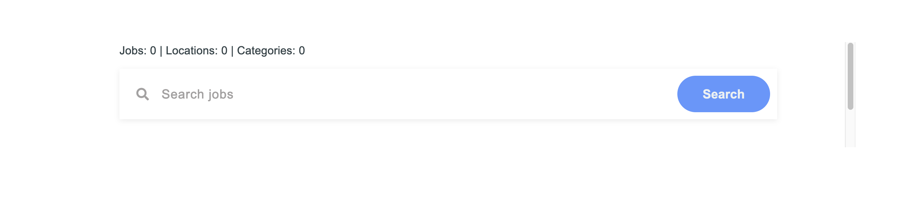
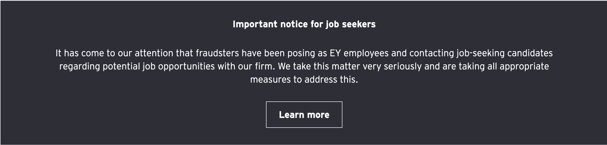

<!-- .slide: data-auto-animate --> #### THE CYBER SECURITY RISKS ON SOCIAL MEDIA ---- <!-- .slide: data-auto-animate --> <div class="presentation_title"> <h4> THE CYBER SECURITY RISKS ON SOCIAL MEDIA </h4> </div> <hr> - Prajwol Pradhan (076BEI023) - --- ### Introduction --- ### Case study: LinkedIn ---- #### Recruitment scam/fraud ---- Disclaimer: No intention to harm or damage reputation of any company. These examples are picked just to demonstrate the current scenario in scam/fraud, and, thus, as a way to spread awareness. ---- My search term: "ey hiring" https://www.linkedin.com/search/results/content/?keywords=ey+hiring Company on spotlight: EY (a company which provides consulting, assurance, tax and transaction services) ---- Sample post #1:  ---- Sample post #2:  ---- Comments:  ----  ---- Let's check the forms ----  ----  ---- Sample post #3: <!-- .slide: data-auto-animate -->  ---- <!-- .slide: data-auto-animate --> Spot the <span style="color:red">red</span> flag ---- What was your "Last Drawn Salary"?  ---- <!-- .slide: data-auto-animate --> #### Motives <!-- ---- --> <!-- .slide: data-auto-animate --> <!-- #### Motives --> ---- <!-- .slide: data-auto-animate --> > If interested comment <span style="color:#0a66c2">#interested</span>. ---- <!-- .slide: data-auto-animate --> > If interested comment <span style="color:#0a66c2">#interested</span>. - "I want to increase engagement on my post/s" ---- <!-- .slide: data-auto-animate --> > "Send Connection so that we can review your profile matches" <hr> That is: "Send me connection request so that we can review whether your profile matches" ---- <!-- .slide: data-auto-animate --> > "Send Connection so that we can review your profile matches" - "I want to flaunt my connections count and my followers count" - "I want to increase engagement on my post/s" ---- <!-- .slide: data-auto-animate --> > Tell us about your "Last Drawn Salary" ---- <!-- .slide: data-auto-animate --> > Tell us about your "Last Drawn Salary" - "I want to know whether I should invest my time to scam you" ---- <!-- .slide: data-auto-animate --> > Fill this Google Form ---- <!-- .slide: data-auto-animate --> > Fill this Google Form - "I want to harvest as much information about you as I can, so that I can scam you better" ---- #### Tips to avoid being scammed ---- 1. Verify whether the job posting is legit ---- Check official jobs/careers page of the company for open roles  Source: https://uxcam.com/careers/ ---- Companies might have published notice like this  Source: https://www.ey.com/en_us/careers ---- Ask the officials of the company to verify the information  Source: https://uxcam.com/careers/ ---- Look for red flags like we discussed ---- 2. Avoid giving out your personal information to strangers - Do not fill out random forms that ask for your personal information or PII <!-- .element: class="fragment" --> - Read point #1 again <!-- .element: class="fragment" --> ---- 3. Understand that legit recruiters do not ask you to: - comment #interested, or <!-- .element: class="fragment" --> - send them connection request so that they can check your profile, or <!-- .element: class="fragment" --> - follow them on xyz social media, or <!-- .element: class="fragment" --> - contact them on xyz platform, or <!-- .element: class="fragment" --> - send them money for anything, or <!-- .element: class="fragment" --> - do anything that sounds suspicious, really <!-- .element: class="fragment" --> ---- <div class="r-stack"> <p class="fragment" style="color:red"> Multiple RED flags! 🚩🚩 </p> </div> ---- 4. Report suspicious posts and people! Whether or not it is LinkedIn, just report them! <!-- .element: class="fragment" --> ---- Report to: - the respective social media platform - the company being used for scamming - law-enforcement agencies (e.g. police, government reporting portals, etc.) ---- Some resources (not limited to LinkedIn): - Vetro Recruitment (LinkedIn) - [Recruitment Scams: How to Spot, Avoid, and Report](https://www.linkedin.com/pulse/recruitment-scams-how-spot-avoid-report-vetro-recruitment/) - Muhammad Imran Khan (LinkedIn) [Job Scams in LinkedIn Posts: How to Spot and Avoid Them](https://www.linkedin.com/pulse/job-scams-linkedin-posts-how-spot-avoid-them-muhammad-imran-khan-/) ---- - Bethany Biron (Business Insider) - [Scammers are posing as fake recruiters, conducting staged interviews - and hiring - as part of an ID theft scheme. Here's how to avoid getting swindled.](https://www.businessinsider.com/how-to-avoid-scammers-posing-job-recruiters-id-theft-2022-8) - Erin Booth (YouTube) - [Avoiding Job Scams on LinkedIn | 11 Signs that It's a Scam](https://www.youtube.com/watch?v=EDpitwOLo8E) ---- - NitMan Talks (YouTube) - [BEWARE Of These Fake Job Posts On LINKEDIN | How To Identify Fake LinkedIn Job Posting?](https://www.youtube.com/watch?v=cBt9-E4r_lM) - Forbes India (YouTube) - [PART-TIME JOB SCAM: Beware of growing WhatsApp and Telegram fraud](https://www.youtube.com/watch?v=9P8YxsDwX_c) --- Thank You! And comment <span style="color:#0a66c2">#interested</span>.